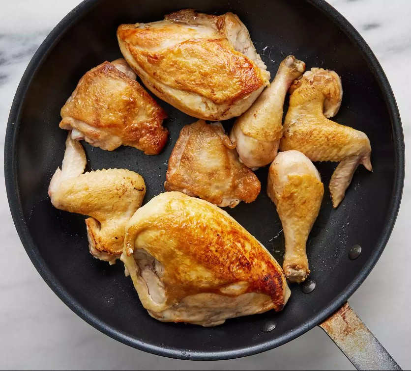
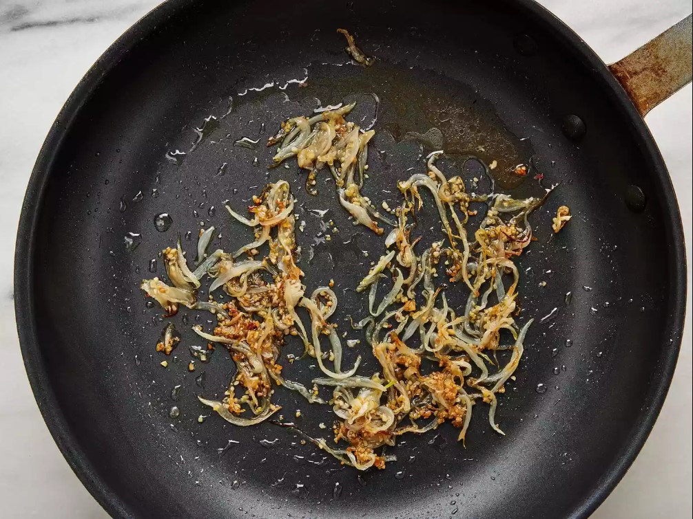
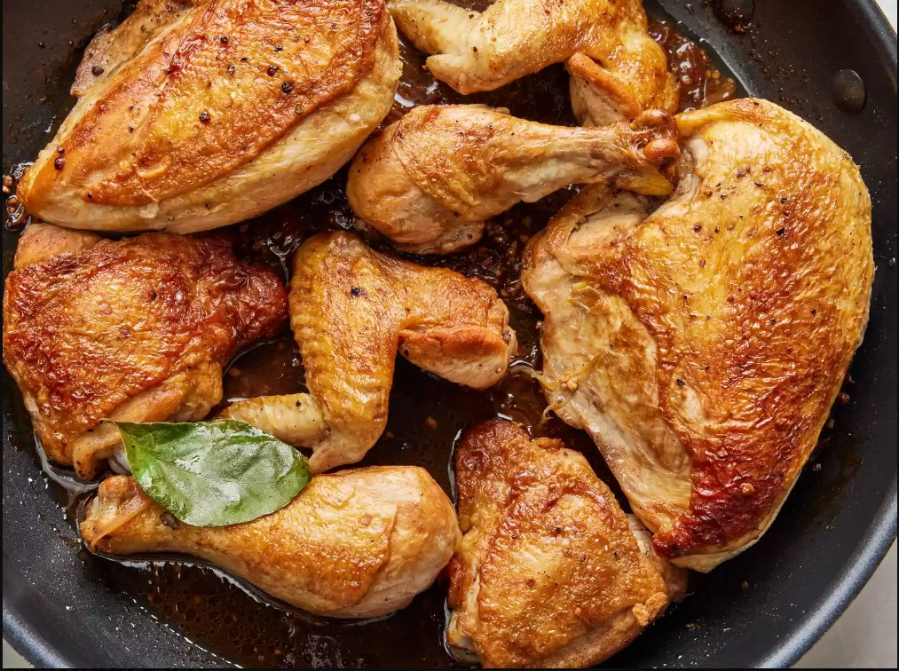

Chicken Adobo

Description
Chicken Adobo is an authentic Filipino dish and is one of the mostly
recognized Filipino foods. Not to be mistaken with Mexican adobo, this
dish is uniquely prepared by stewing chicken in vinegar and soy sauce.
Several sources who are experts in Asian food history say that the
Filipinos were already cooking adobo even before Spanish colonization.
According to them, cooking with vinegar preserves the meat. This method is
also considered as one of the earliest food preservation practice.
Chicken Adobo is a type of Filipino chicken stew. Chicken pieces are
marinated in soy sauce and spices, pan-fried, and stewed until tender. The
dish gained popularity because of its delicious taste and ease in
preparation.
Recipes
- 2 tablespoons vegetable oil
- 1 (3 pound) chicken, cut into pieces
- 1 large onion, quartered and sliced
- 2 tablespoons minced garlic
- ⅔ cup low sodium soy sauce
- ⅓ cup white vinegar
- 1 tablespoon garlic powder
- 2 teaspoons black pepper
- 1 bay leaf
Steps on how to cook Chicken Adobo
-
Heat vegetable oil in a large skillet over medium-high heat. Cook
chicken pieces until golden brown, 2 to 3 minutes per side. Transfer
chicken to a plate and set aside.

-
Add onion and garlic to the skillet; cook until softened and brown,
about 6 minutes.

-
Pour in soy sauce and vinegar and season with garlic powder, black
pepper, and bay leaf.
-
Return chicken to pan, increase heat to high, and bring to a boil.
Reduce heat to medium-low, cover, and simmer until chicken is tender and
cooked through, 35 to 40 minutes.

- Enjoy!